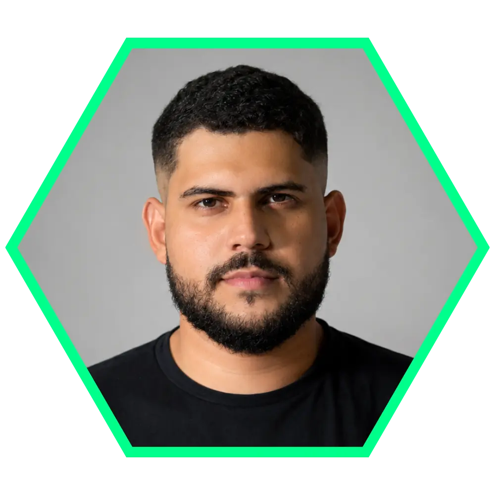

Engenheiro de Computação & Hardware Embarcado.
Desenvolvo sistemas eletrônicos completos, desde o projeto de circuitos e PCBs até a integração com firmware e software.

MINHAS ESPECIALIDADES.
Hardware & Sistemas Embarcados
STM32, ESP32, C/C++, GPIO, PWM, sensores, comunicação serial
Prototipagem & Eletrônica
Leitura de esquemáticos, soldagem, debug, testes, bancada, osciloscópio (se usar), multímetro
Software & Machine Learning
Python, ML, APIs, integração com sistemas físicos
SOBRE MIM.
Sou estudante de Engenharia de Computação na UFC com forte atuação prática em desenvolvimento de hardware e sistemas embarcados. Tenho experiência na construção de circuitos eletrônicos, integração com microcontroladores e desenvolvimento de soluções completas envolvendo sensores, atuadores e controle.
Atualmente trabalho em assistência técnica, o que me proporciona experiência real em diagnóstico, reparo e análise de falhas em sistemas eletrônicos. Além disso, já desenvolvi projetos e freelancers envolvendo prototipagem, testes e integração de hardware com software.
Complementarmente, possuo experiência em processamento de sinais e machine learning, o que me permite desenvolver soluções mais completas, especialmente em aplicações que envolvem análise de dados provenientes de sistemas físicos.
EXPERIÊNCIA E PROJETOS DE HARDWARE
Projetos focados em desenvolvimento eletrônico, prototipagem e sistemas embarcados.
Engenharia de Hardware e Diagnóstico Eletrônico — Supremus Service
Atuação profissional em assistência técnica especializada de equipamentos eletrônicos de alto valor, com foco em diagnóstico avançado, engenharia reversa e reparo em nível de placa. Experiência com robôs aspiradores e sistemas embarcados de fabricantes como Xiaomi, Roborock e Dyson, lidando com arquiteturas complexas e múltiplos subsistemas eletrônicos.
- Análise e diagnóstico de falhas em circuitos eletrônicos complexos (nível de placa)
- Engenharia reversa para identificação de defeitos sem documentação técnica
- Reparo e substituição de componentes SMD e módulos eletrônicos críticos
- Intervenção em subsistemas embarcados (sensores, comunicação, módulos Wi-Fi)
- Testes funcionais e validação de sistemas após manutenção
- Diagnóstico de falhas intermitentes e não triviais em sistemas embarcados
- Análise de blocos funcionais de placas (alimentação, controle, comunicação)
Desenvolvimento de Veículo Elétrico Controlado Remotamente (VERC) — Freelancer
Projeto completo de desenvolvimento de um veículo elétrico controlado remotamente (VERC), atuando desde a concepção até a documentação técnica final. O trabalho envolveu definição de arquitetura eletrônica, seleção de componentes, desenvolvimento de placa de circuito impresso (PCB) e integração de sistemas embarcados para controle, acionamento e gerenciamento de energia.
- Definição da arquitetura do sistema (controle, potência e alimentação)
- Desenvolvimento de esquemático e layout de PCB utilizando KiCad
- Seleção e especificação de componentes eletrônicos
- Implementação de sistema embarcado para controle do veículo
- Desenvolvimento do sistema de acionamento de motores e controle remoto
- Projeto do sistema de gerenciamento de bateria (BMS e alimentação)
- Elaboração de documentação técnica completa para o cliente
SafeDriver IoT — Veículo Robótico Autônomo com ESP32
Desenvolvimento de um sistema embarcado completo para um veículo robótico 4WD com operação manual e autônoma. O projeto integra controle de motores, sensoriamento distribuído, comunicação via Wi-Fi e interface web embarcada, permitindo controle remoto e navegação com desvio de obstáculos em tempo real.
- Projeto da arquitetura eletrônica e esquemático no KiCad
- Controle de motores DC via ponte H (L298N) com PWM independente
- Integração de 4 sensores ultrassônicos (detecção 360° de obstáculos)
- Desenvolvimento de firmware em C++ (PlatformIO / ESP32)
- Implementação de lógica de navegação autônoma com desvio de obstáculos
- Desenvolvimento de interface web embarcada para controle remoto (HTTP)
- Projeto do sistema de alimentação com bateria 2S e regulador LM2596
- Testes de estabilidade, comunicação Wi-Fi e validação em protótipo físico
Driver Bare-Metal para Sensor DS18B20 — STM32 (Blue Pill)
Desenvolvimento de biblioteca bare-metal em C para comunicação com o sensor de temperatura DS18B20 utilizando microcontrolador STM32F103C6T8, sem uso de HAL ou bibliotecas de alto nível. O projeto envolveu implementação direta do protocolo 1-Wire, controle preciso de temporização e manipulação de registradores para comunicação confiável com o sensor.
- Implementação do protocolo 1-Wire via controle direto de GPIO
- Manipulação de registradores do STM32F103 (sem HAL)
- Controle preciso de temporização para comunicação com o sensor
- Desenvolvimento de driver reutilizável para leitura de temperatura
- Validação funcional do protocolo com aquisição de dados reais
- Organização do código em estrutura modular para uso embarcado
Jogo da Memória (Genius) em Bare-Metal — BeagleBone Black
Implementação de um jogo da memória inspirado no Genius utilizando programação em C em ambiente bare-metal na BeagleBone Black. O projeto envolveu controle direto de GPIOs, lógica de estados e interação com o usuário, consolidando fundamentos de firmware embarcado e manipulação de hardware em baixo nível.
- Programação em C com cross-compilação para arquitetura ARM
- Controle direto de GPIOs para leitura de botões e acionamento de LEDs
- Implementação de lógica de estados para funcionamento do jogo
- Manipulação de temporização para controle de sequência e interação
- Execução em ambiente bare-metal sem sistema operacional
PROJETOS DE SOFTWARE & ML
Projetos envolvendo dados, machine learning e desenvolvimento de APIs.
Identificação de Cargas (NILM) - TCC
Sistema de identificação de dispositivos elétricos focado em Edge Computing. Utiliza processamento digital de sinais (Wavelet, FFT) e algoritmos de Machine Learning para classificação de padrões de consumo.
Preditor de Estatísticas da NBA
Pipeline de MLOps de ponta a ponta para prever estatísticas de jogadores da NBA, com coleta via API, modelagem e dashboard interativo.
Analisador de Vendas da Olist
Projeto de Machine Learning para prever atrasos em entregas, com engenharia de features, tratamento de dados desbalanceados e interface interativa.
API de Mini E-commerce
API REST completa para e-commerce com Node.js e TypeScript, incluindo transações, validação de dados e testes automatizados.
FastAPI Auth API
API REST para autenticação de usuários utilizando FastAPI, com hash de senhas e autenticação baseada em JWT.
Predição de Preços de Carros
Projeto de Machine Learning para regressão de preços com avaliação comparativa entre múltiplos modelos.